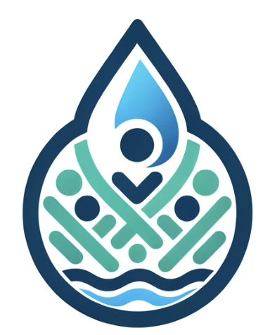
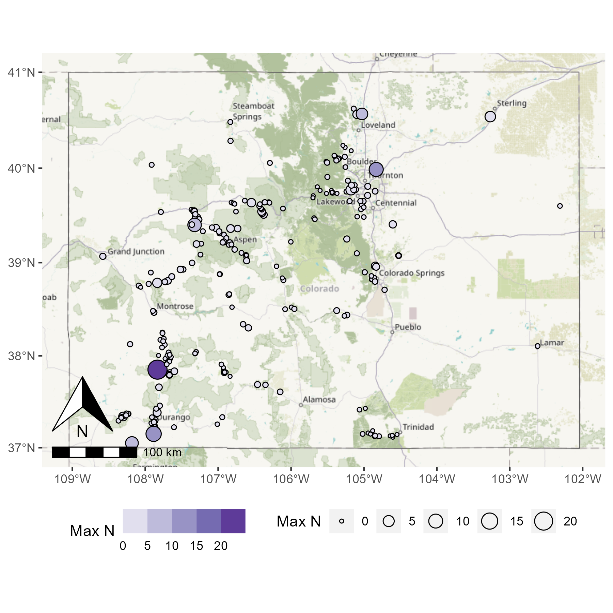

Welcome to CommunityWater
Monitoring water levels and quality, together.
About CommunityWater
This is a community-driven initiative to monitor and report on water levels and quality in our area.
Real-Time Water Level and Quality Updates
Find Water Quality Data and Stations Near You
Want to use our API? Go for it! The API URL is: https://communitywater-047a19a44671.herokuapp.com/